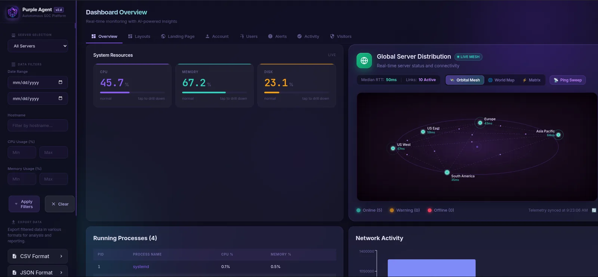
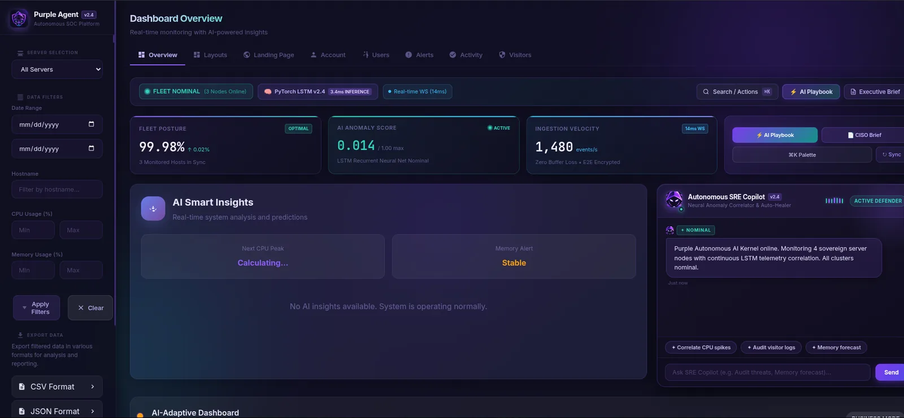

Smart insights
Real-time analysis of CPU, memory, disk and network patterns, turned into plain-English diagnostics.
Case study · 04
An AI SRE agent that tells you what’s wrong, and why.
Most monitoring tools show a spike in CPU and leave you to work out why. Purple Agent analyses the system in real time, correlates events across metrics, and says in plain English what’s happening, before it becomes an outage.


A lightweight Python agent runs as a systemd service on each server.
System metrics, log files, network connections and file integrity.
Telemetry reaches the backend over JWT-authenticated communication.
AI insights, predictive alerts and configurable alert rules.
A live WebSocket dashboard, incident history and a chat assistant.
Real-time analysis of CPU, memory, disk and network patterns, turned into plain-English diagnostics.
Predicts CPU peaks and memory pressure before they hit, using a PyTorch LSTM model.
WebSocket-powered charts, a per-process breakdown, network history and several layout modes. No page refresh.
JWT authentication with admin and user roles, a visitor IP log, a user activity audit trail and suspicious-request detection.
Configurable rules such as CPU above 80% or disk above 85%, four severity levels, and incident tracking and history.
One agent per monitored server, designed for multi-server deployments and set up with a single config file.
The goal is a diagnosis in plain English, not another chart to interpret.
Predictive alerts aim to flag CPU peaks and memory pressure before they land.
A small Python process under systemd, authenticated with a JWT, so it is easy to put on every server.
Every IP that reaches the backend is tracked, with a full audit trail of logins and actions.